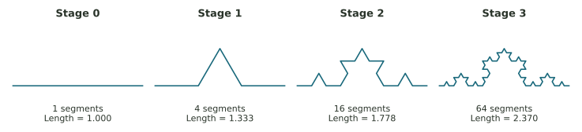

Investigate the rule. Explain the pattern.
Trace, calculate, and compare: a guided laboratory on nearby starts, Collatz, fractal scaling, logistic dynamics, and observation scale.
Five investigations, one careful habit
Identify the rule, calculate, then interpret what the calculation shows. Read the Week 10 reading first and keep the explorer available for checking longer trajectories.
- The start is step 0. After five updates, you have six recorded values.
- Use the calculator’s stored value between updates. Round only the reported answer.
- Fractions such as
81/256are accepted in numerical fields. For percentages, enter the number requested by the question.
Check each section after entering your answers. Changes can be rechecked.
What kind of mathematics are we doing?
Each investigation supplies a starting point and a rule. Follow it and report the quantities requested.
In \(a_{n+1}\), the subscript \(n+1\) means “at the next step.” The rule’s right-hand side tells you how to calculate that new value. A word such as “peak,” “area,” or “gap” tells you which feature of the resulting numbers to report.
Which difference are you tracking?
The absolute difference is the distance between two values. The relative difference divides that distance by the magnitude of the first value.
Use the same update on two possible starting measurements, as we did with balance and temperature sequences in earlier weeks. Comparing their values at the same step tells us how the initial disagreement changes.
Compare absolute and relative differences using the values in each question.
A. Add 5 at every update
Make two columns. Their first entries, at step 0, are 10 and 10.1. Add 5 to each entry to create the next row. Continue until row 5. Then compare the two entries in that row.
Use \(a_{n+1}=a_n+5\), starting once from 10 and once from 10.1.
B. Multiply by 3 at every update
Start a new pair of columns at 1.00 and 1.01. Multiply each entry by 3 to create the next row. The notation \(3^6\) means six factors of 3; it gives the common multiplier after six updates. To find the relative difference, divide the final gap by the final value in the first column.
Use \(a_{n+1}=3a_n\), starting once from 1.00 and once from 1.01. Work through six updates.
Count arrows. Record the peak.
Even values are divided by 2; odd values are multiplied by 3 and then increased by 1. Stop at the first 1. The peak includes the starting value and all values up to that first 1.
Here the inputs are whole numbers. An even number is divisible by 2 without a remainder; an odd number is not. Recheck that property at every new value, because it chooses the next instruction.
Now trace the complete routes from 6 and 7. You can use the explorer to check each even/odd decision.
More pieces does not always mean more area
A construction stage means applying a replacement instruction to every current piece of a drawing. Stage 0 is the original shape. We count pieces and measure their sizes separately, just as a packet count and the size of each packet together determine a total.

Sierpinski area
Area measures the filled surface in square units. Splitting a triangle into four congruent smaller triangles gives each one one-quarter of the parent’s area. Keeping three of them leaves three quarters. Repeating that removal multiplies the remaining area by 3/4 again; it does not subtract a fixed quarter of the original area each time.
For example, starting with 16 square units leaves 12 after one stage and 9 after two. A fraction of 0.5625 means 56.25% of the original area. The responses below ask for a fraction or decimal, so enter 0.5625, rather than 56.25, for that example.
The initial area is 1. Each stage keeps three quarters of the previous area.
First an update; then a long-run pattern
Imagine a population expressed as a fraction of a chosen reference population. Then \(x=0.2\) means 20% of that reference, and \(1-x=0.8\) is the limiting factor used by the model. One update represents a breeding season. The letter \(r\) is a fixed response setting; it is not itself a percentage growth rate.
Read the formula as “next fraction = setting × current fraction × limiting factor.” This is the same input-output idea as the feedback sequences in Week 5, with a different rule.
A. Use r = 2.8 and x₀ = 0.2
Use the fixed-point formula \(x^*=1-1/r\), then use the recursion for the trajectory. The explorer can calculate ten updates without rounding between them.
B. Use r = 3.8 with starts 0.40 and 0.41
Use one column for each starting estimate. At every row, subtract the smaller value from the larger to get the absolute gap. The bars in \(|x_n-y_n|\) mean that nonnegative difference. “Exceeds 0.05” means greater than 0.05, so an exact gap of 0.05 would not count.
In the explorer, set r to 3.8, starting state A to 0.40, initial gap to 0.01, and updates to 10. The first-gap readout uses exactly this cutoff of 0.05. Inspect the table to see why that row is the first one above the cutoff.
Calculate both trajectories with full stored precision. Compare \(|x_n-y_n|\) at each update, including the initial gap at step 0.
The ruler is part of the report
For each row in this invented survey, use:
Picture a straight ruler laid end to end along a shoreline on a map. Its length tells how much each placement contributes; the placement count tells how many such pieces were used. Shorter rulers can follow turns that longer rulers bridge across.
| Ruler length | Placements |
|---|---|
| 100 m | 80 |
| 50 m | 200 |
| 25 m | 520 |
| 12.5 m | 1,340 |
Keep a copy of your work
Your responses save in this browser. To submit them, enter your name above, choose Print completed work / Save PDF, and use the browser’s printer or PDF option. Follow the submission instructions in Canvas.